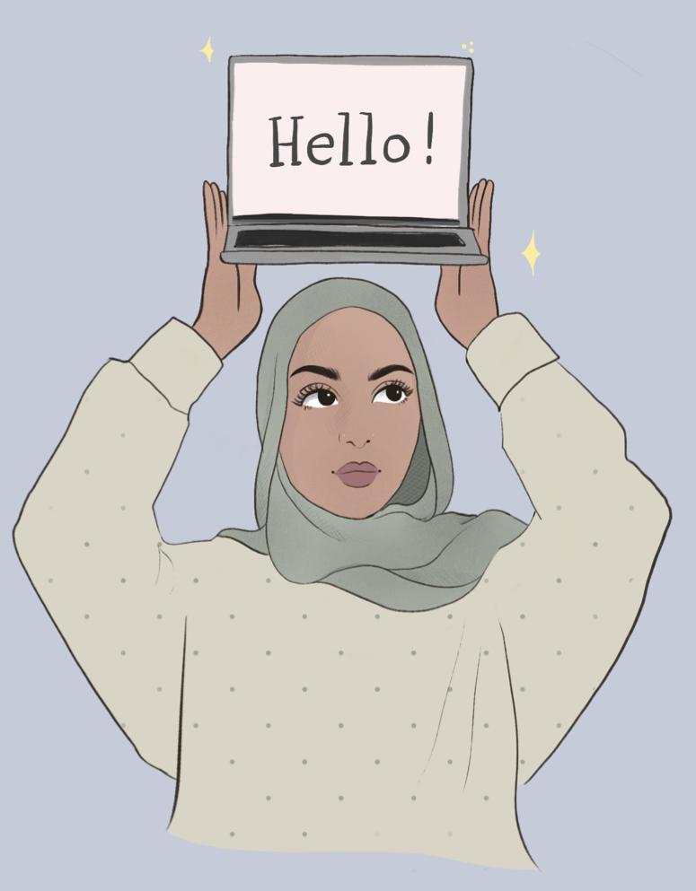
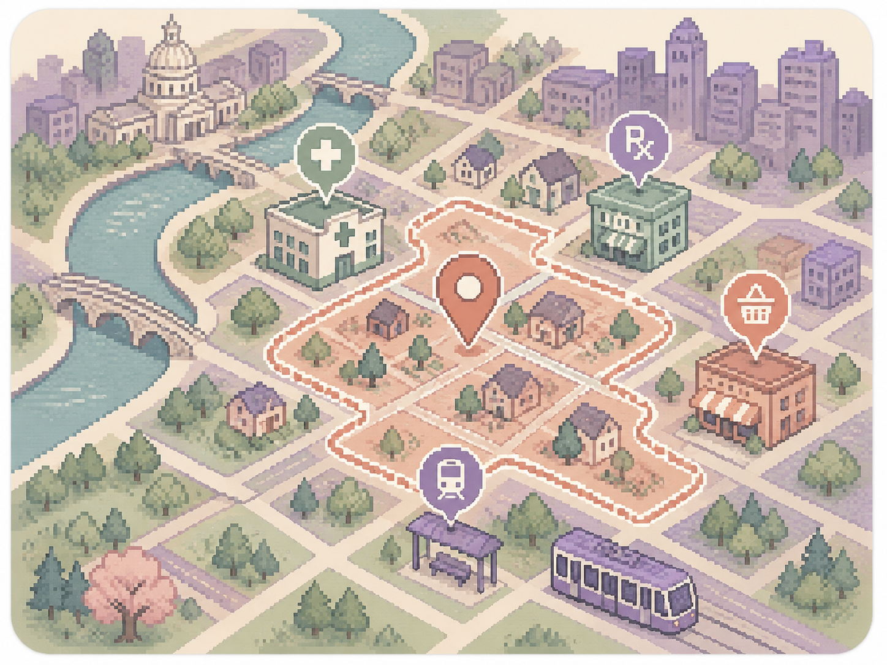
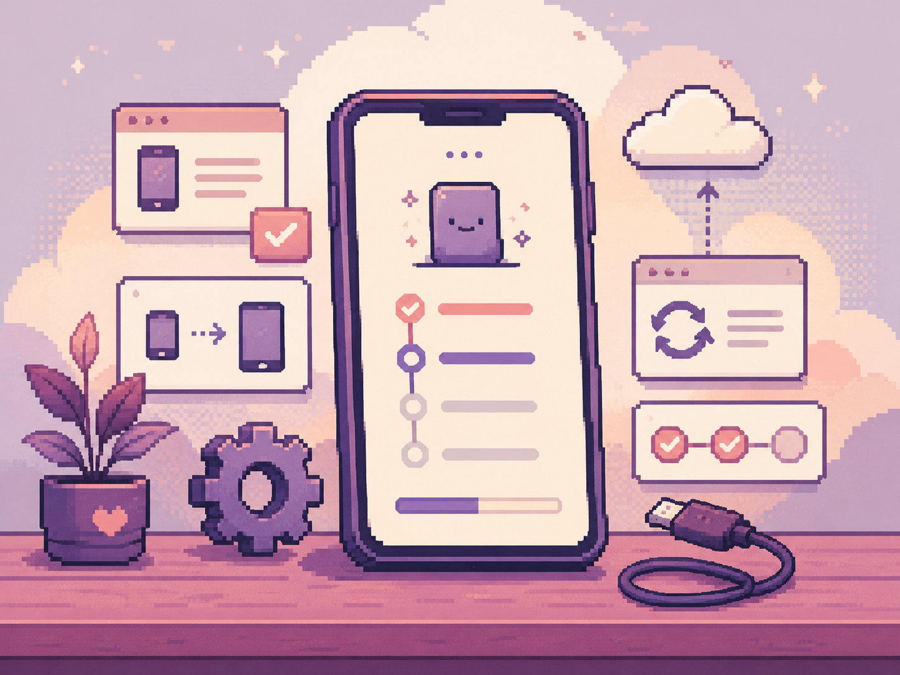

Technical Specialist · Apple
Technical troubleshooting, customer-centered communication, and collaborative problem-solving across Apple hardware and software.
I blend computer science, UX, and visual design to make digital experiences that are useful, thoughtful, and distinctly human.

I come from a computer science background, and I enjoy understanding how things work under the hood. I am equally drawn to the visual side of digital products, including layout, typography, color, interaction, and the small choices that shape how something feels.
I do not see development and design as separate paths. My technical background helps me create ideas that are realistic to build and easier to communicate across teams, while my design perspective keeps the final experience clear, intentional, and polished.
A mix of UX thinking, front-end implementation, and visual exploration.
Designed and built as an interactive desktop-style portfolio that blends visual design, front-end implementation, and a lightweight AI-assisted portfolio guide.

A Streamlit-based service access explorer that analyzes neighborhood proximity to pharmacies, grocery stores, clinics, and transit to highlight local access gaps.

A device setup and troubleshooting assistant that turns technical triage logic into a clear, guided flow for account issues, backups, software problems, and device transfer paths.
A UX case study covering research, user flows, wireframes, testing, and high-fidelity mobile design.

Personal digital artwork exploring mood, style, composition, and visual storytelling in Procreate.
Technical troubleshooting, customer-centered communication, and collaborative problem-solving across Apple hardware and software.
Google UX Design coursework and continued study in research, prototyping, typography, layout, color, and dynamic interfaces.
GPA 3.7/4.0, Dean’s List. Relevant studies included human-computer interaction, computer graphics, and web development.
Tutored teenagers in programming fundamentals and structured problem-solving through approachable explanations.
Managed teams, events, budgets, training, communications, and process improvements across service and youth programming roles.
Capability groups replace arbitrary percentages and show the actual areas I use across projects.
I am based in St. Paul, Minnesota and open to relocation. Reach out for creative technology, UX, product, or front-end opportunities.